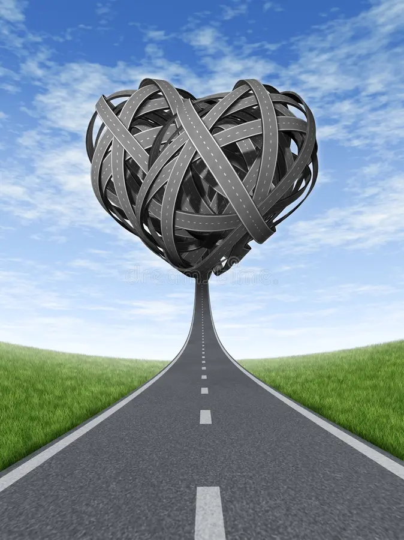
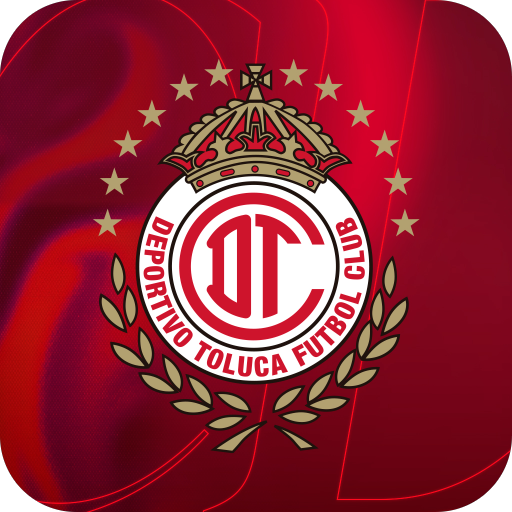

Amor a Primera Vista
El comienzo de una historia inesperada.
Hay personas que llegan sin avisar y otras que regresan por un motivo y terminan convirtiéndose en una parte inolvidable de nuestra historia. Esta es la nuestra: momentos, recuerdos y pequeñas cosas que significan mucho.
El comienzo de una historia inesperada.

La primera cita y los nervios al verse en persona.

Próximo episodio.

Un regalo creado para compartir alegría.

Los girasoles favoritos de ella.

Reik y la música que compartieron.

Toluca, orgullo y alegría compartida.

Una promesa hecha jamás deshecha.
Coloca un vídeo llamado video.mp4 en esta misma carpeta.

Esta historia no necesita ser perfecta para ser importante. Gracias por formar parte de estos recuerdos.
La página personal está lista para convertirse en tu próxima gran historia.
Hay una historia que quiero seguir escribiendo contigo...
Aunque decidamos otro momento, lo bonito de esta historia seguirá presente.
Nuestra historia todavía puede convertirse en algo hermoso.
Porque eres una persona valiosa y especial. Si necesitas ser escuchada, acompañada o simplemente tener a alguien cerca, puedes contar conmigo. Cuidaré de tu felicidad y estaré para ti cuando me necesites.